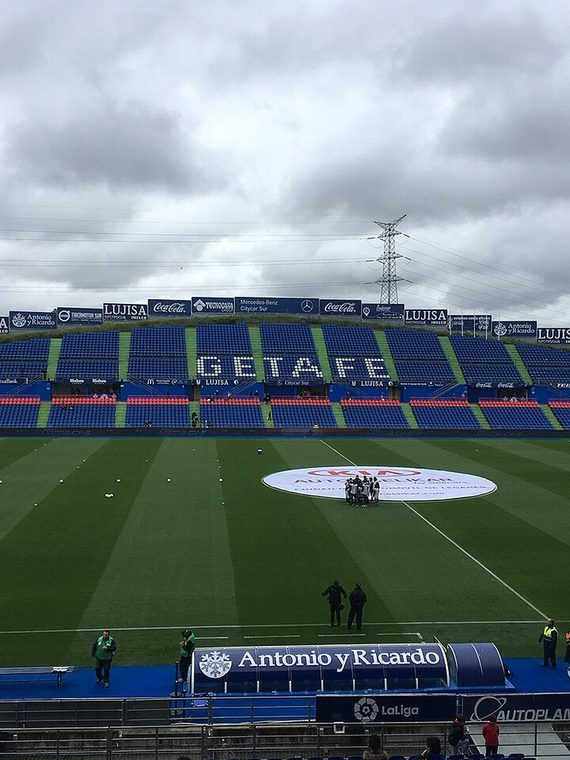
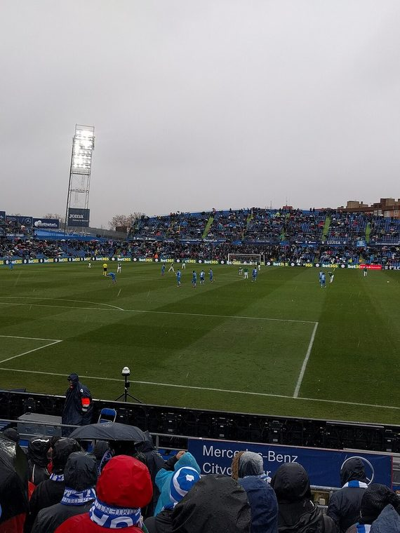
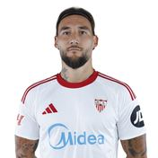
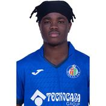

GE
';" />El aguerrido del sur de Madrid
Getafe CF
1983
Año de fundación del club
Azulones / El Geta
Una breve historia
Refundado en 1983, el Getafe CF se consolidó en la élite del fútbol español en los 2000, destacando por un estilo combativo y disciplinado que le llevó a disputar dos finales de Copa del Rey y competir en Europa varias temporadas.
Fieles a los colores
de Getafe

📷Foto pendiente
(getafe-1.jpg)';" />

📷Foto pendiente
(getafe-2.jpg)';" />
Títulos y logros
Momentos que hicieron historia
★
Finalista de la Copa del Rey en 2006/07 y 2007/08
★
Cuartos de final de la UEFA Cup en 2007/08 y 2008/09
★
Uno de los clubes revelación del fútbol español en los años 2000
La rivalidad
El duelo que enciende a la afición
Getafe CF
VS
Real Madrid CF
Temporada 2026 / 27
Plantilla del primer equipo
Datos de ejemplo — reemplázalos con la plantilla real en data/teams.js.
1
🧑';" />
Letacek
Portero
2
🧑';" />
Djene
Defensa
3
🧑';" />
Davinchi
Defensa
4
🧑';" />
Sazonov
Defensa
5
🧑';" />
A. Abqar
Defensa
6
🧑';" />
Mario Martín
Centrocampista
7
🧑';" />
Juanmi
Delantero
8

🧑';" /> Gudelj Centrocampista
9
🧑';" />
B. Mayoral
Delantero
10
🧑';" />
Satriano
Delantero
11
🧑';" />
R. Terrats
Centrocampista
13
🧑';" />
David Soria
Portero
15
🧑';" />
Boselli
Defensa
16
🧑';" />
Francho
Centrocampista
17
🧑';" />
Kiko F.
Defensa
18
🧑';" />
Uche
Centrocampista
19
🧑';" />
Enes Ünal
Delantero
20
🧑';" />
Ivan
Delantero
21
🧑';" />
Andres Garcia
Centrocampista
22
🧑';" />
Johan Mojica
Centrocampista
23
🧑';" />
Mangala
Centrocampista
24
🧑';" />
Z.romero
Defensa
26

🧑';" /> J. Ives Valou Defensa
27
🧑';" />
Ibra Drj
Delantero
28
🧑';" />
Risco
Centrocampista
29
🧑';" />
Curro
Centrocampista
30
🧑';" />
O. Lopez
Centrocampista
31
🧑';" />
Moha
Centrocampista
32
🧑';" />
Joselu
Delantero
33
🧑';" />
M. Achraf
Delantero
35
🧑';" />
Ferrer
Portero